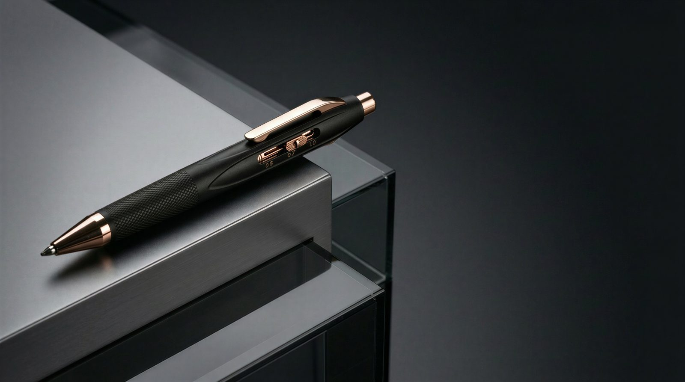
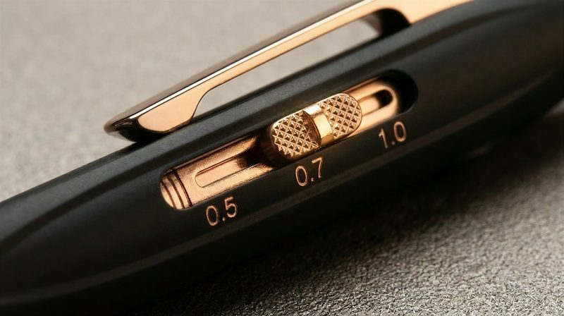
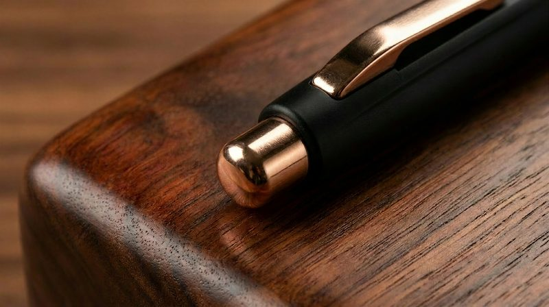
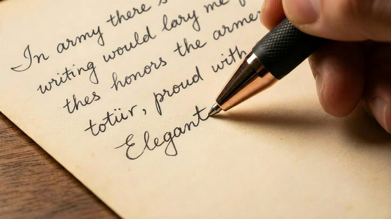
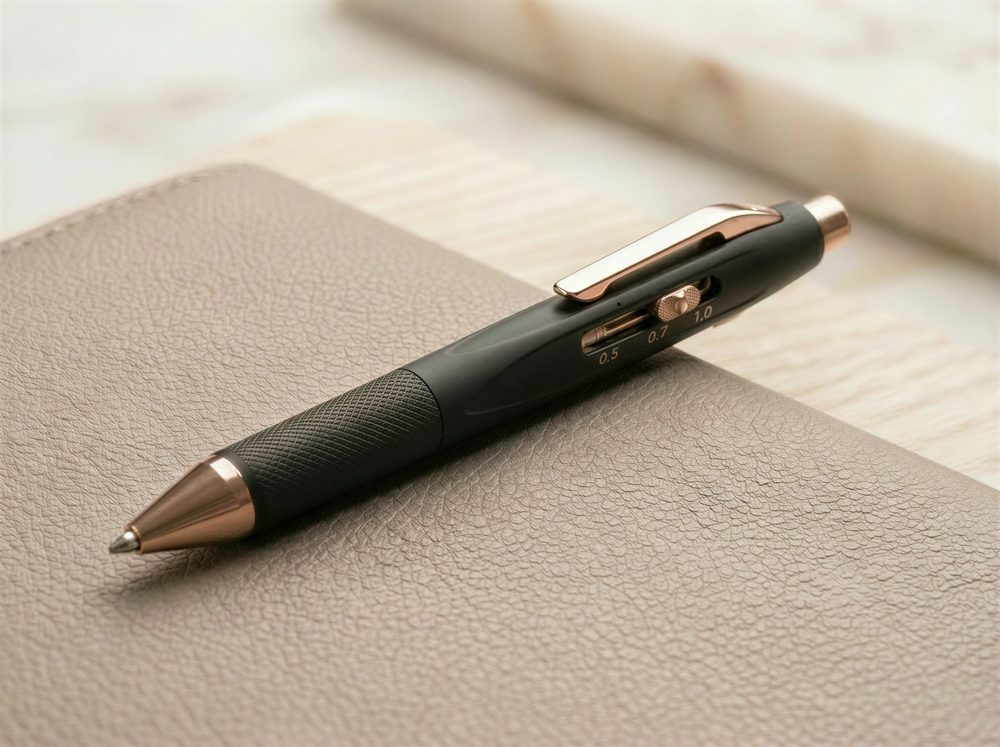
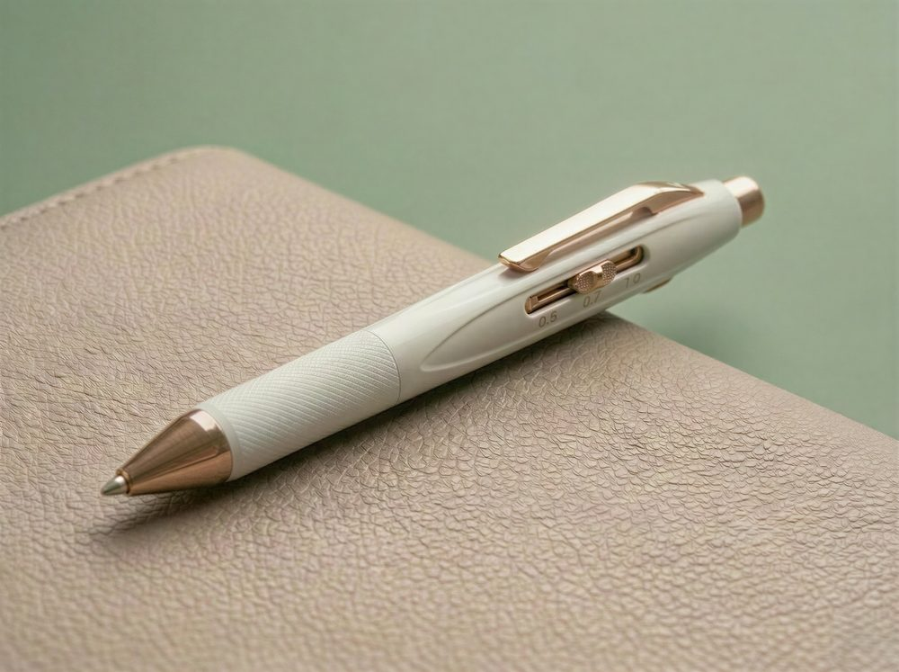
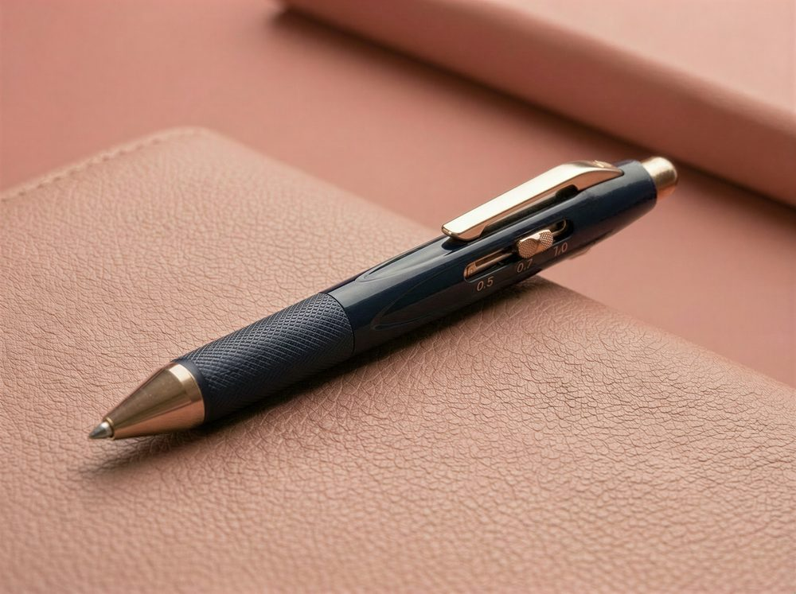
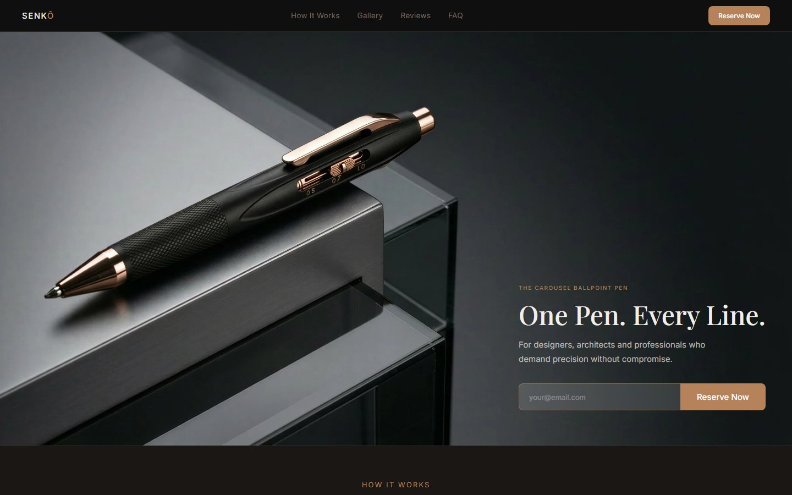

SENKŌ
A precision carousel ballpoint pen: three line weights in one metal body, for people who work in fine, medium and bold.

The problem
Architects, designers and construction managers switch line weights all day as they mark up, sketch and sign off. Today that means carrying several pens, and losing them. Multi-pens on the market switch ink colors, not line weights, and most of them feel disposable.
The strategy
Build a pen that does one thing nothing else does: change line weight with one hand in under three seconds. Then make every other decision (materials, finishes, brand and launch) justify carrying it every day at a premium price.
These figures are design specs from the product definition, not user-test results.
The opportunity: one job, done well
I started with the people who think in line weights for a living, and with what they actually carry:
- Architects and architecture students mark up drawings in fine, medium and bold, often several times an hour.
- Product and industrial designers move between sketching, annotating and signing off in a single review.
- Construction managers mark up blueprints on site, where every extra pen is one more thing to lose.
The job isn't "write in more colors." It's "change line weight without breaking my flow."
That reframing set the whole brief. SENKŌ doesn't compete with four-color pens. It competes with the three separate pens in a designer's bag.
Bet 1: Switch weight, not color
The core interaction is a carousel. A slider on the barrel rotates an internal disc between three tips, and a toggle on the cap deploys or retracts the selected tip. The aim was an action you could learn in one try and repeat without looking.
-
01
Slide to select
Fine, medium or bold. It clicks into place, so you can feel which tip you're on.
-
02
Toggle to cap
One press deploys the tip and one press retracts it, so it's safe in a pocket every time.
-
03
Zero wobble
A ±0.05mm tolerance target, so each line lands exactly where you put it.

Positioning decision
Four ink colors, one line weight, a plastic body and pull-down levers that rattle.
One ink, three line weights, a machined metal body and a slide-and-click carousel.
Bet 2: Materials that earn the price
At $149 to $229, every component has to justify itself. I set one rule: two shells, one mechanism. The aluminum build costs less because of its body, never because of its internals. Both builds share the same stainless carousel, so the cheaper option doesn't compromise what the pen is for.
| Component | Titanium build | Aluminum build |
|---|---|---|
| Body | Grade 5 titanium (Ti-6Al-4V), stonewashed | 6061-T6 aluminum, hard anodized |
| Mechanism | 316L stainless steel carousel and rail | Identical 316L stainless steel |
| Accents | Rose gold PVD | Rose gold PVD |
| Grip | CNC-machined micro-knurl | Anodized micro-knurl |
| Founder's price | $179 (retail $229) | $149 (retail $189) |
A second deliberate choice: SENKŌ takes standard Schmidt and Parker-style refills. A premium pen that locks you into proprietary ink gives people a reason not to buy it. Standard refills remove that objection.


Bet 3: Three finishes, three settings
I didn't want a long list of colors, so I gave each finish a setting it belongs in. Rose gold runs across all three as the brand signature, so a SENKŌ reads as a SENKŌ from across a desk.



Go-to-market: test demand before tooling
Manufacturing a machined metal pen is expensive, so the launch is built to show who will actually pay before money goes into tooling. I designed the site and funnel as a ladder of commitment:
-
01 · Interest
Join the waitlist
An email and nothing else, with no commitment. This builds the launch audience.
-
02 · Intent
Pledge $1
This locks in the founder's price and first pick of colors, limited to 500 spots. A dollar is a much stronger signal than an email.
-
03 · Purchase
Kickstarter launch
Reservers get early notice and priority order access when the campaign goes live.

The site leads with a single promise and puts the reservation field in the hero.
The brand imagery shows the three people from the research rather than abstract studio shots, so each target buyer can picture the pen in their own work.
Where it stands and what's next
SENKŌ is in pre-launch and taking reservations ahead of a Kickstarter campaign. The visuals on this page are product renders. Next steps, in order:
- Validate the carousel in people's hands: test working prototypes with architects and designers, focusing on how the detent feels and how fast they can switch without looking.
- Convert reservations at launch: bring the $1 reservers into the Kickstarter's first 48 hours, when early momentum matters most.
- Lock manufacturing: confirm tolerances and refill fit with a machining partner before committing to volume.
Takeaways
- One sharp job beats a feature list: "Switch line weight in one hand" gave every later decision something to measure against.
- Price is a design problem: the material choices, the shared mechanism and the standard refills are all there to make $149+ feel obvious rather than indulgent.
- Design the launch, not just the object: the reservation funnel is part of the product, because it decides whether the pen gets made.